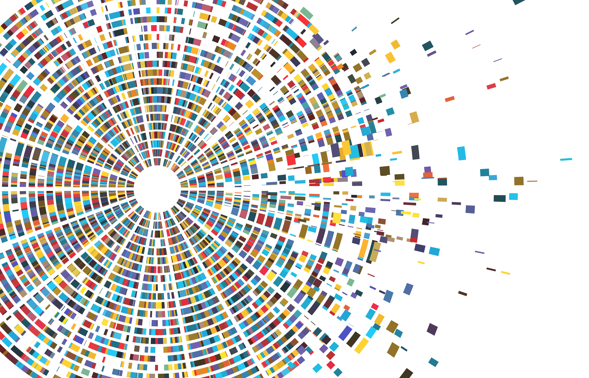

A protocol for sequencing and analysing 16S-ITS-23S amplicons using Oxford Nanopore’s Native Barcoding kit to profile prokaryotes on species-level in a mixed community [Under development]
2024-06-22
Chapter 1 About this GitBook

This GitBook is under development (2024).
This GitBook provides a basic step-by-step protocol for students who want to get started with sequencing multiple samples of high quality, full-length microbial amplicons with an Oxford Nanopore instrument, and then process and visualise the data using various packages in R.
This protocol reflects the experiences we had in the lab and may help to get you started on your own journey of discovery. One of the biggest hurdles for students that embark on sequencing environmental DNA for the first time, is the effort required to learn new technologies, various coding languages, file types and formats, packages or platforms that are involved (think Unix, Linux, Slurm, Qiime, R, RMarkdown, python, conda, ggplot, docker, GitHub, data instances…) before they even can start looking at exploring the data for biological meaning and producing publishable output. Hence, this protocol aims at lowering your ‘activation’ energy by providing some guidance for each step from DNA extraction, to amplification, library preparation, sequencing, data processing and finally some basic visualisations in R.
This protocol uses the DNeasy Powersoil Pro Kit (Qiagen, Hilden, Germany) to extract DNA from wastewater sludge, as well as the Native Barcoding Kit (SQK-NBD114.96) with a R10.4.1 flowcell (FLO-MIN114) to sequence long (~4-4.4 kb) amplicons from environmental DNA. The primer used was developed by (Martijn et al. 2019). Initial costs to purchase all consumables will be ~AUD$7,700.
Check out our workflows for short-read 16S sequencing at https://chrismitbiz.github.io/ABlab-workflows if you want to get started with Miseq 16S sequencing instead.
If you are interested in sequencing the living biomass via PMA treatment in combination with short-read 16S sequencing, check out our recent paper Dead in the water – Role of relic DNA and primer choice for targeted sequencing surveys of anaerobic sewage sludge intended for biological monitoring (Krohn et al. 2024)
Get in touch
We work at the Andy Ball lab, RMIT University, Bundoora, Melbourne and are part of the Industry-led Biosolids Training Centre. Email me or comment on the discussion section of the GitHub repository for this GitBook. You will need to get a GitHub account to join the discussion. Its free.
More about me and my PhD research can be found here: https://clean-dirt-digests.netlify.app.
Follow me on Twitter or LinkedIn.
Bio:
Dr Chris Krohn is an early career researcher whose interests could be summed up with: “Environmental sequencing, microbial ecology, chlorinated pollutants, organic matter, wastewater, anaerobic digestion, and how everything connects”.
In 2021 I joined the ARC Biosolids Training Centre at RMIT (www.transformingbiosolids.org.au), where we help water utilities to improve circular resource management by getting more renewable biogas and carbon/fertiliser values out of our municipal biosolids (essentially our poo). In project 1C of the Centre I develop metagenomic (DNA-based) methods to monitor the microbiome of anaerobic digestion, an important microbial treatment process for wastewater. I believe DNA-based diagnoses of wastewater sludges will help the water/biosolids sector improve resource recoveries and risk management.
Before that, after a career in one of the most fast-cycled and short-sighted manufacturing industries that took me from Germany to Vietnam and Hong Kong/Shenzhen, I decided to hit the switch and start thinking long-term and circular. Ten back-to-uni years later, in 2021 I finished a PhD in Soil Science at La Trobe Uni where I sequenced soil DNA and explored if and how soil biology was involved in the degradation of extremely persistent legacy pesticides that contaminate agricultural surface soils since several decades.

This work is licensed under a Creative Commons Attribution 4.0 International License.